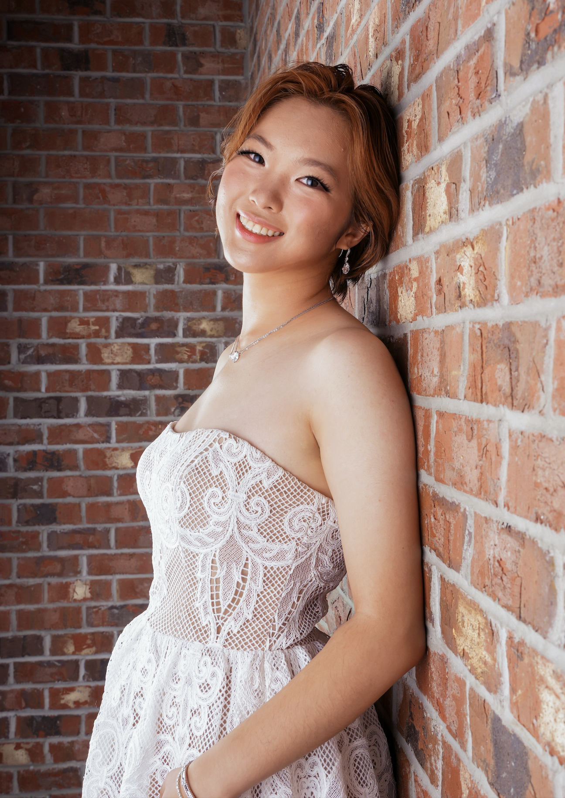

Energy, soil, and the stories in between.
Environmental researcher, artist, and documentary maker, between Shanghai, Florida, and Fujian.

I’m Shihan, a student, artist, and environmental researcher drawn to the connections between people, place, and the natural world. Growing up between Shanghai and Florida, with family roots in Fujian, taught me to see how culture, environment, and everyday life are woven together. Through sustainable energy research, visual art, photography, and documentary filmmaking, I tell the stories of people and places that often go unnoticed. Whatever the medium, I’m curious about how we make sense of the world, the marks we leave on it, and how we might imagine a more sustainable future.
A bilingual app that turns small everyday actions into carbon savings, from riding transit in Shanghai to protecting Florida's coast, with rewards through clubs.
Art and photography about buildings, earth, and the women history overlooks.
Papers, data maps, and engineering projects on sustainable energy.
"Shifting Winds, Enduring Roots" documentary and The Silver Cup Detective Novel.
Environmental projects and community work, from public actions to design with local groups.